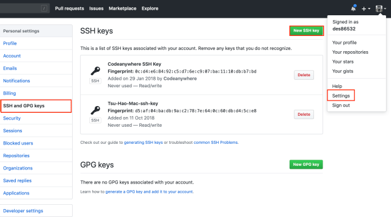

流程
- 生成金鑰
- 添加ssh金鑰
- 新增本地專案
- 本地專案與遠端串聯
- 推送至遠端
確認是否已經生成過金鑰
打開 terminal 輸入 cd ~/.ssh 在輸入 ls
.pub 檔就是公開金鑰
若沒有 .ssh資料夾或是沒有 .pub檔就是沒有生成過金鑰
輸入 ssh-keygen 即可生成金鑰，重複上述流程確認下 .ssh資料夾內是否有 .pub檔
輸入 ssh-keygen 後，他會向你確認保存公開金鑰的位置(.ssh/id_rsa)，儘量不要更改，省得麻煩
之後會要求你輸入密碼，此密碼是在你要使用公開金鑰時，必須要輸入的密碼，若你不想有密碼可以不要輸入
取出金鑰
到 .ssh 的目錄下，輸入 cat ~/.ssh/id_rsa.pub | pbcopy ，便已經複製下來
添加公鑰到Bitbucket
Bitbucket 的 ssh key 有 deployment key & account key 的分別
deployment key 與 account key 是相同的，差別在添加的地方以及作用
deployment key 只有可以讀取的權限，account key 才有可以修改的權限
不可同時添加 deployment key & account key
所以必須添加 account key ！！
deployment key
deployment key 添加在專案內 -> setting -> Access key -> Add key
將剛剛複製的公鑰(id_rsa.pub檔)貼在key的地方，label可以自由命名
添加完畢後
account key
account key 點左下角帳號頭像 -> Bitbucket settings -> setting -> SSH keys -> Add key
Sourcetree 登入 Bitbucket 以及 Github 帳號
按下 Connect Account
新增遠端專案
新增本地專案
按下右下角的 commit ，便完成本地檔案的版控
接下來要將本地檔案推送到遠端
本地專案與遠端連結
如果沒有連結 Bitbucket 以及 Github 帳號，按下地球符號，是不會出現任何東西的
Remote name 可以隨意填，建議填與 Repositories 相同的名字
最後 push 到遠端便完成了
推送到 Github 遠端
添加公鑰到Github

生成公鑰 ssh-keygen 複製公鑰 cat ~/.ssh/id_rsa.pub | pbcopy
添加本地專案到Github遠端
account 要選擇 Github ， private repository 不要打勾
這邊會直接幫你在 Github 遠端建立一個新的 repository

輸入完公鑰密碼後，便完成推送到 Github 遠端
補充
ssh key & https key 差別
ssh key 可以幫你儲存公鑰密碼，在你每次修改檔案並推送到遠端時，不用輸入
https key 不能儲存公鑰密碼，所以每次修改都要輸入密碼，比較麻煩，但比較安全，官方也是推薦使用https key
- Post title：【Git】Sourcetree + Bitbucket and Github 版本控制
- Post author：Neil Yang
- Create time：2019-06-06 00:00:00
- Post link：https://des86532.github.io/2019/06/06/Git/sourcetree_with_bitbucket_and_github/
- Copyright Notice：All articles in this blog are licensed under BY-NC-SA unless stating additionally.